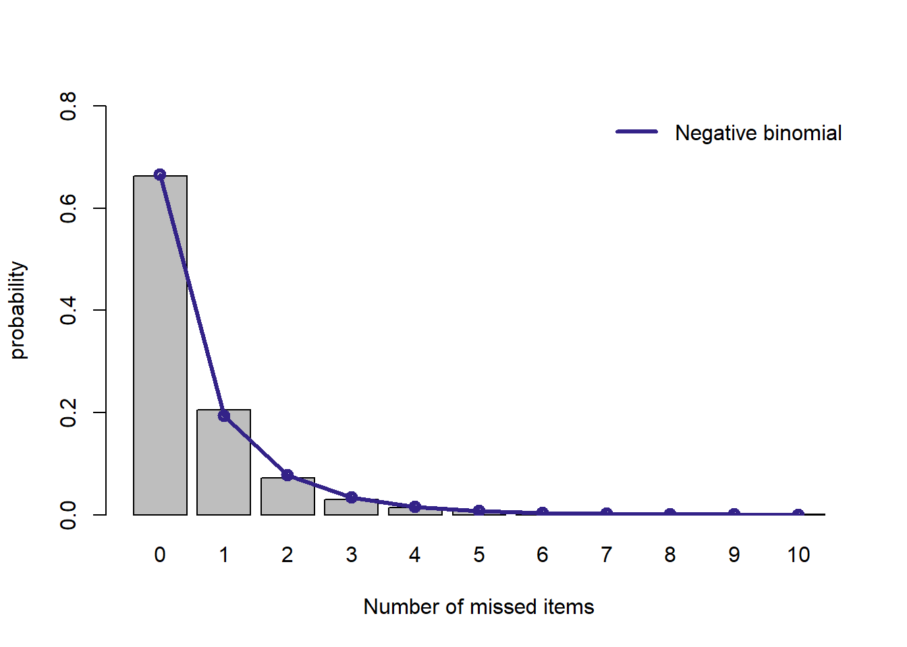
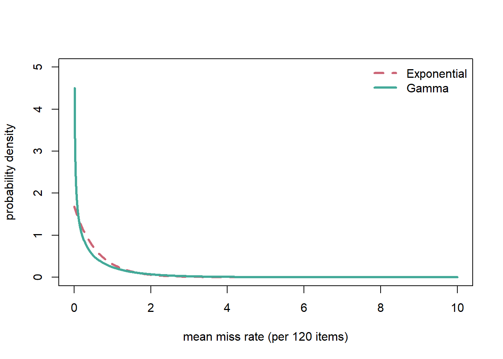

回答ミス数のモデリング (IPIP120データ)
ここでは，ここでは，実データ (Johnson-120) の解析: 回答ミスがある回答者の分析 で記録したIPIP-NEO-120データの回答ミス数に関して， 回答ミス数のモデリングと同様のモデリングを行います。詳細は適宜割愛しますので，上のページを参照してください。
準備
必要なパッケージを読み込みます。
library(MASS) # 分布の最尤推定用
library(pscl) # ハードルモデル，ゼロ切断モデル用描画のための関数設定
# プロット用関数
plot.dist <- function(density, dist.name = "fitted distribution"){
mp <- barplot(table(df_data$count.miss)/length(df_data$count.miss),
xlab = "Number of missed items",
ylab = "probability",
ylim = c(0,0.8))
lines(mp, density, type = "o", lwd = 3, col = "#332288", lty = 1)
legend("topright",
legend = dist.name,
lty = 1, col = "#332288",
lwd = 3,
bty = "n")
}データの読み込み
無回答項目数を読み込みます。
df_data <- read.csv("./data_count_miss_IPIP120.csv", header = TRUE)
xcount <- 0:max(df_data)モデルのフィッティング
以下，モデルごとに最尤推定でパラメータを推定し， 実際のデータの分布と合わせてプロットします。
ポアソン分布
mod.poisson <- fitdistr(df_data$count.miss, densfun = "poisson")
plot.dist(dpois(xcount, mod.poisson$estimate), "Poisson")幾何分布
mod.geometric <- fitdistr(df_data$count.miss, densfun="geometric")
d.geometric <- dgeom(xcount, prob = mod.geometric$estimate[1])
plot.dist(d.geometric, "Geometric")
ポアソン分布に比べるとよくフィットします。 しかし，反応ミス数が0のときはその確率は過小評価，1, 2のときはやや過大評価されているようです。
負の二項分布
mod.negbin <- fitdistr(df_data$count.miss,
densfun="negative binomial")
n <- mod.negbin$estimate[1]
mu <- mod.negbin$estimate[2]
p <- n / (n + mu) # 成功確率
d.nb <- dnbinom(xcount, size = n, prob = p)
plot.dist(d.nb, "Negative binomial")
ずれはありますが，幾何分布に比べるとよくフィットしています。
ハードルモデル (ゼロ切断ポアソン分布)
mod.hurdle.poiss <- pscl::hurdle(count.miss ~ 1, df_data)
d.h <- predict(mod.hurdle.poiss, type = "prob")[1,]
plot.dist(d.h, "Hurdle (Poisson)")ハードルモデルの構造上，ゼロの値のカウントは完璧にフィットするのですが， それ以上の値になるとあまりよくフィットしません。 ゼロ切断ポアソン分布はこの分布に適合しないようです。
ハードルモデル (負の二項分布)
次に2段階目でサンプリングする離散分布として，(ゼロを含まない) 負の二項分布を用います。
mod.hurdle.nb <- hurdle(count.miss ~ 1, data = df_data,
dist = "negbin")
d.h <- predict(mod.hurdle.nb, type = "prob")[1,]
plot.dist(d.h, "Hurdle (Negative binomial)")(純粋な)負の二項分布と比べても，このハードルモデルは良くフィットしているようです。
ゼロ過剰モデル (ポアソン分布)
離散分布として，まずはポアソン分布を用います。
mod.zeroinfl.poiss <- pscl::zeroinfl(count.miss ~ 1, df_data,
dist = "poisson")
d.zeroinfl <- predict(mod.zeroinfl.poiss, type = "prob")[1,]
plot.dist(d.zeroinfl, "Zero inflated (Poisson)")ゼロ過剰モデルも構造上，ゼロの値のカウントは完璧にフィットするのですが， それ以上の値になるとあまりよくフィットしません。
ゼロ過剰モデル (負の二項分布)
次に離散分布として，負の二項分布を用います。
mod.zeroinfl.nb <- pscl::zeroinfl(count.miss ~ 1, df_data, dist = "negbin")
d.zeroinfl.nb <- predict(mod.zeroinfl.nb, type = "prob")[1,]
plot.dist(d.zeroinfl.nb, "Zero inflated (negative binomial)")負の二項分布を用いたハードルモデルに比べるとフィットはよくないようです。
AIC によるモデル選択
AICを比較してみます。
AIC(mod.poisson, # ポアソン分布
mod.geometric, # 幾何分布
mod.negbin, # 負の二項分布
mod.hurdle.poiss, # ハードルモデル (離散分布はポアソン分布)
mod.hurdle.nb, # ハードルモデル (離散分布は負の二項分布)
mod.zeroinfl.poiss, # ゼロ過剰モデル (離散分布はポアソン分布)
mod.zeroinfl.nb # ゼロ過剰モデル (離散分布は負の二項分布)
) | df | AIC | |
|---|---|---|
| mod.poisson | 1 | 1442489 |
| mod.geometric | 1 | 1303074 |
| mod.negbin | 2 | 1291637 |
| mod.hurdle.poiss | 2 | 1332378 |
| mod.hurdle.nb | 3 | 1289937 |
| mod.zeroinfl.poiss | 2 | 1332378 |
| mod.zeroinfl.nb | 3 | 1291639 |
IPIP-300のデータ同様，負の二項分布を離散分布とするハードルモデルがAICが 最低となり，最も予測力のあるモデルと判断されることになります。 次いで，負の二項分布が良いようです。
反応ミス率の分布の推定
上でフィットした負の二項分布や幾何分布のパラメータから，対応する \(\lambda\)の分布をプロットしてみます。
# 色のリスト
collist <- c("#CC6677", "#44AA99")
# ラインスタイルのリスト
ltylist <- c(2,1)
x <- seq(0, 10, by = 0.01)
# 幾何分布に対応する指数分布
b <- mod.geometric$estimate[1] / (1 - mod.geometric$estimate[1])
plot(x, dexp(x, rate = b), type="l",
col = collist[[1]], lwd = 3,
lty = ltylist[1],
xlab = "mean miss rate (per 120 items)",
ylab = "probability density",ylim = c(0,5))
# 負の二項分布に対応するガンマ分布
a <- mod.negbin$estimate[1]
mu <- mod.negbin$estimate[2]
p <- a / (a + mu) # success rate
lines(x, dgamma(x, shape = a, rate = p / (1-p)),
lty = ltylist[2], type = "l", col = collist[[2]], lwd = 3)
legend("topright",
legend = c("Exponential","Gamma"),
lty = ltylist, col = collist, lwd = 3,
bty = "n")
IPIP-300のデータと同様の (しかし反応ミスの確率はゼロ近辺がより極端に多い) 結果になりました。